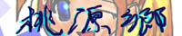
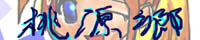
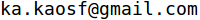

ゲームのやり込みとか通常攻略とかそれに伴う調査結果などを紹介してるような気がします．してない気もします．ネタバレ(ゲームの内容が分かってしまうこと)するので，ご注意下さい．
サイト外へのリンクについては全て別窓が開いてリンクするようになっています．
サイト内でのリンクについては同じ窓の場合もあれば別窓になる場合もあります．
著作権
当サイトにある全ての文書の著作権は管理人である「か」にあります．無断転載は禁止です．
転載したい場合には連絡して下さい．
動作環境
IE6.0 と Sleipnir ver2.5.17 で確認．
横幅が800程度あれば基本的に大丈夫なはず．
スタイルシートをふんだんに使っています．
リンク
リンク・アンリンクフリーです．どこにリンクしていただいても構いませんし，いつ，いかなる理由で外してもらっても構いません．特に相互リンクを希望していなければ連絡もいりません．相互リンク希望の場合はメールでその旨をお伝え下さい．
ただしその場合，リンクするのはTOP以外は許可いたしません．
フォルダ・ファイルの位置・名前がいつどのように変わるか分からないからです．
TOPのURLは http://tougenkyou65536.hp.infoseek.co.jp/ です．
バナーが必要な場合は下の２つのうちのどちらでも好きな方をお使い下さい．
 
管理人について
| 詳細 |
|
||
| 趣味 | ゲーム，プログラミング，同人活動，数学，読書 | ||
| 連絡 |
 こちらまで気軽にどうぞ． |